HTTP methods used in API requests
- GET: is used to request data from a specified resource.
- DELETE: deletes the specified resource.
- POST: is used to send data to a server to create a resource.
- PUT: is used to send data to a server update a resource.
- PATCH: is used to apply partial modifications to a resource. (you don't have to fill all the body to make
changes in a resource)
HTTP Responses
- Informational responses (100-199)
- Successful responses (200-299)
- Redirection messages (300-399)
- Client error responses (400-499)
- Server error responses (500-599)
Postman essentials
- Create Workspace with the name of the project that you are going to work
- Create collection (folder that contains a group of request)
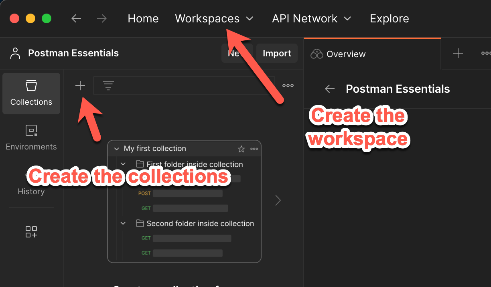
- Create a request inside your collections
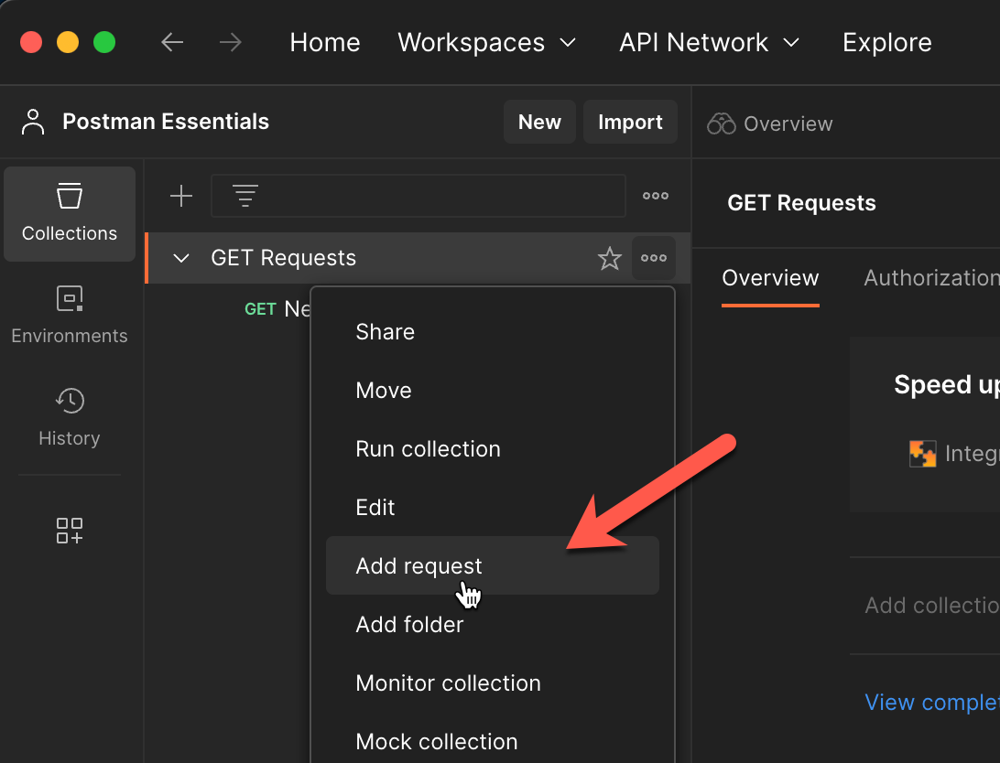
- You can add test validations in the request with JS, there are some snippets created that you can use
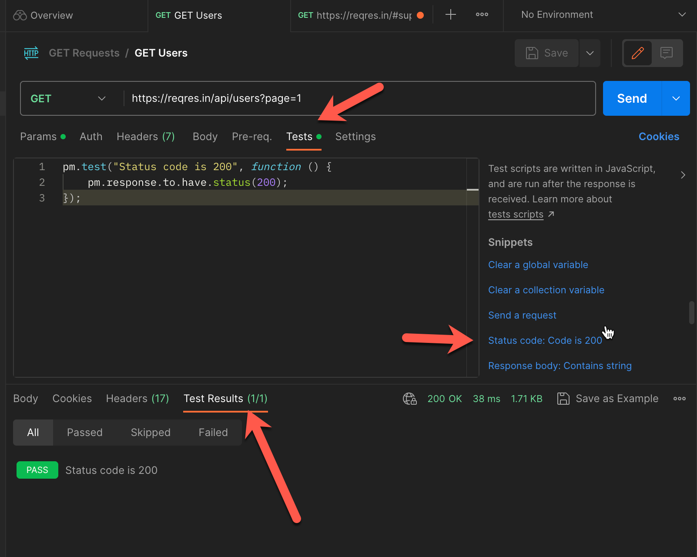
- For POST methods make sure that you have configured in the body section *raw and JSON
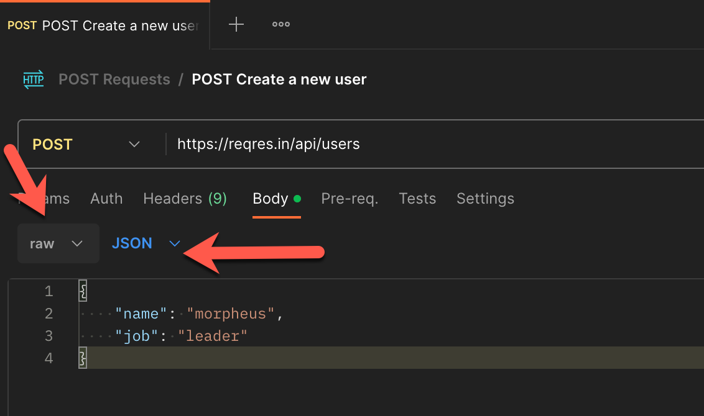
Postman collections opctions
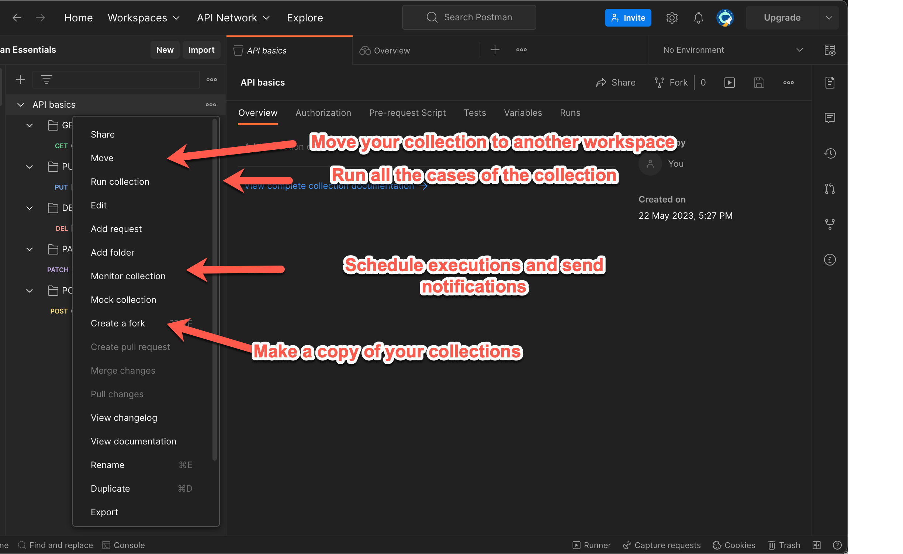
- Create folder inside a collection in order to have your collection organized
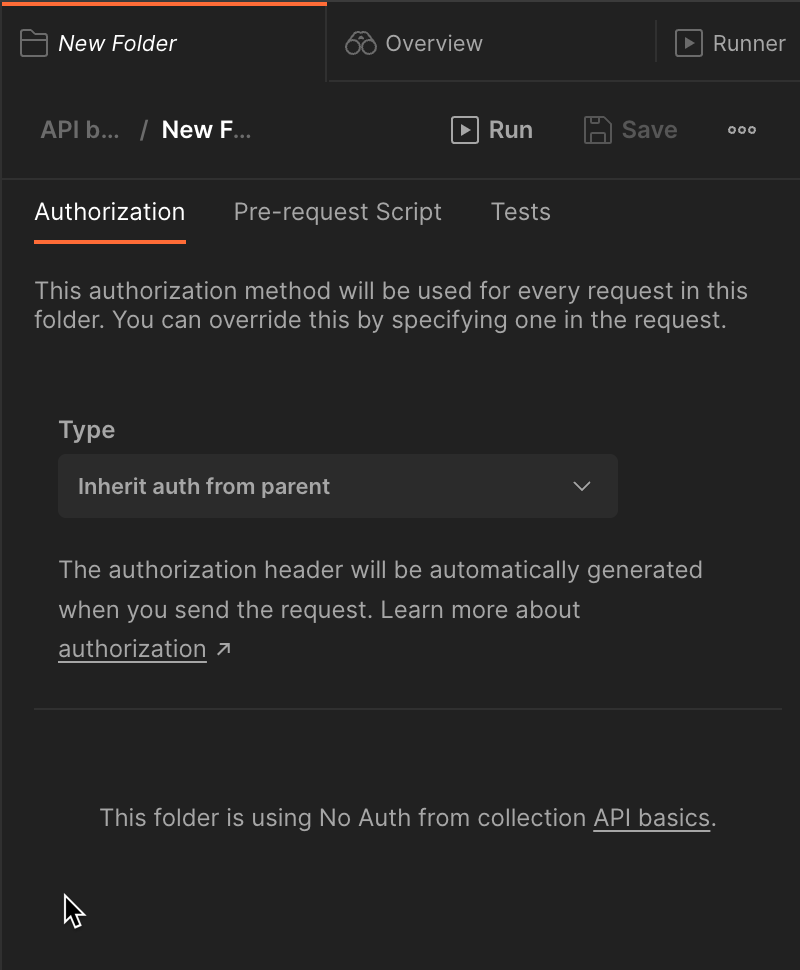
- In the run collection options you can set iterations and change the way of run (manually, schedule or via cli)
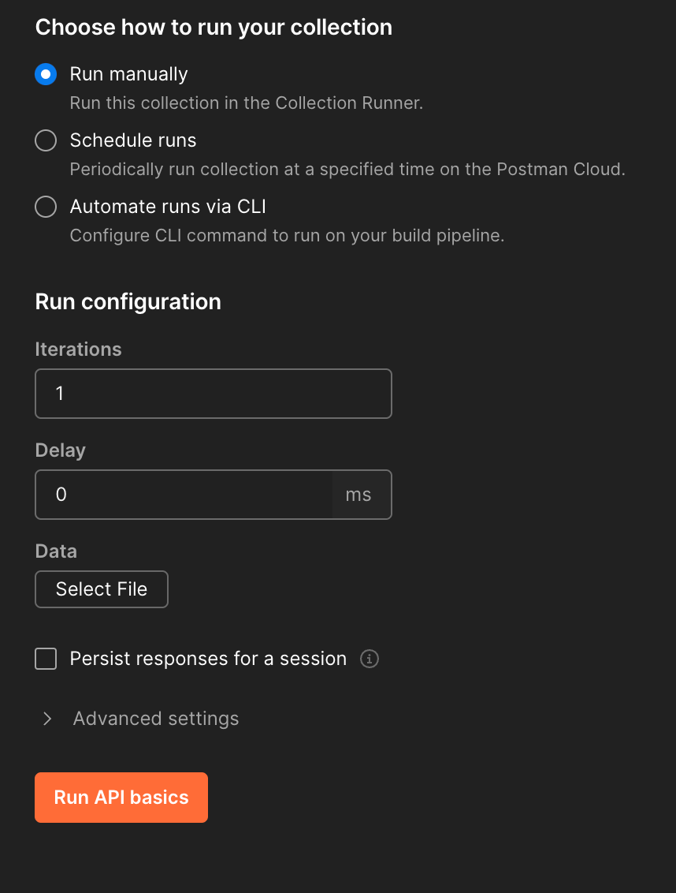
- You can set your schedule hourly daily weekly and send notifications
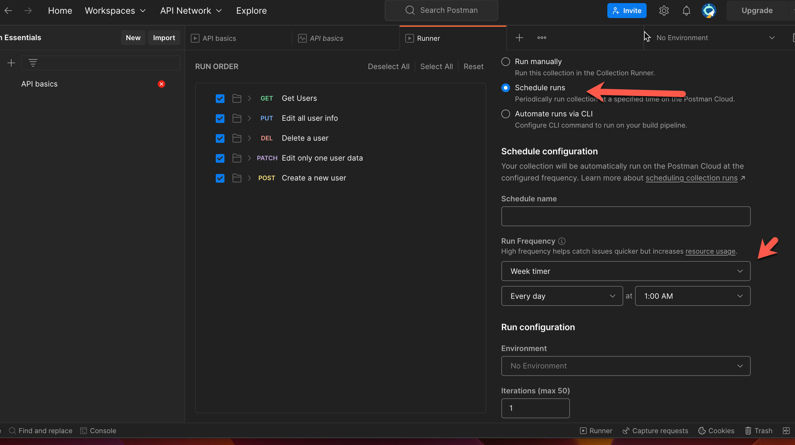
- You can delete and edit the schedule created
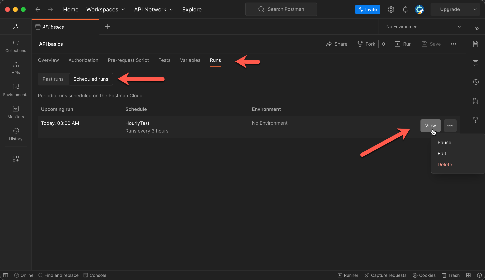
- In the create monitor options you can shcedule executions and send notification for the failures
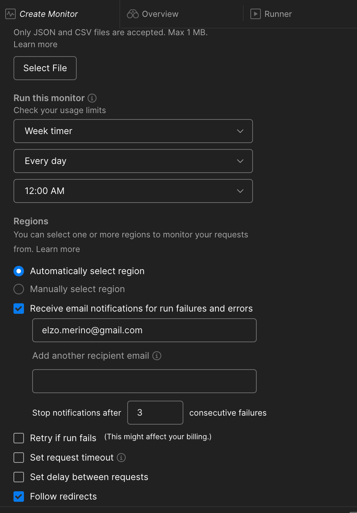
- In the side bar you can delete and run your Monitor
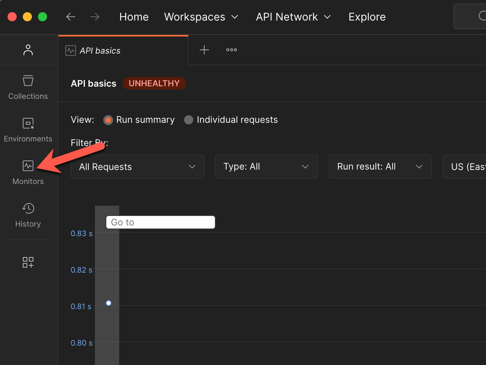
- Export your collection as JS file and then share
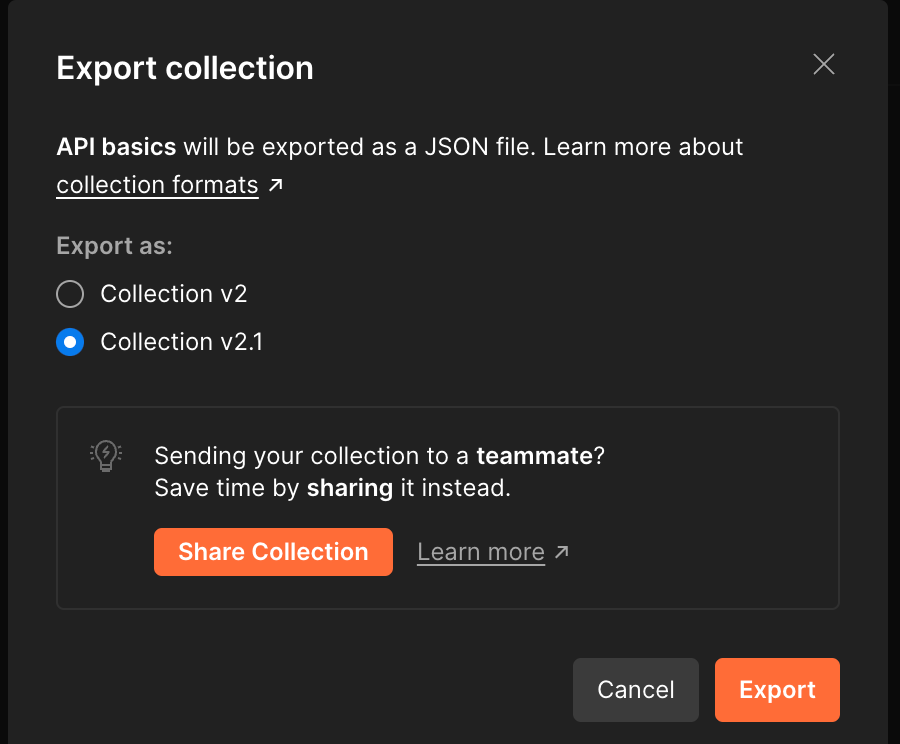